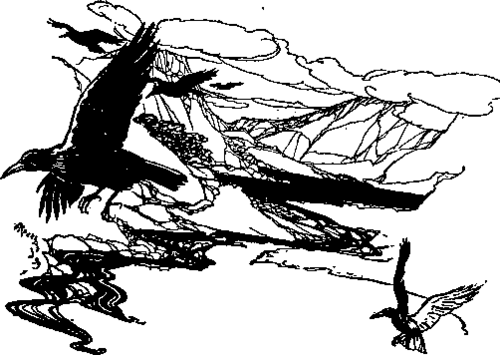

Salmon Fishing. Part 5
Description
This section is from the book "Fly Fishing", by Sir Edward Grey. Also available from Amazon: Fly Fishing.
Salmon Fishing. Part 5
Salmon fishing is a sport in which the angler need not grudge any amount of success either to himself or his friends, if they fish with a fly. In any fair-sized river, the number of salmon which can be caught with the fly even by fishing all day and every day up to the end of October, is so small in proportion to the whole of the fish, that the stock of salmon belonging to the river will never be impaired or unduly reduced in this way. The salmon which are in one proprietor's stretch of the river one day may not be there the next. He need no more think of sparing them, when they are inclined to take, than he need of sparing woodcocks, when shooting his covers, in order to reserve them for another day's sport. In this respect salmon fishing has an advantage over trout fishing. The migratory habit of salmon gives a feeling of freedom to do one's utmost, as well as a feeling of uncertainty whether the fish are in the water or not.
But migration leads to great difficulties and drawbacks. If it is true that it is not in the power of any one owner to spoil his own and other people's sport by fair fly fishing, it is also true that it may be in the power of one owner by netting, to spoil the sport of the whole river, and as a matter of fact sport on most rivers is seriously interfered with by netting at the mouth or in the lower waters. The question is a very difficult one, and has led to much legislation and litigation. It is clear that everybody, from the fisherman in the sea to the owners of the spawning beds at the head of the river and its tributaries, ought to have some share of the salmon, but I do not think that legislation has always managed to distribute this share fairly, or in a way which is satisfactory to the various interests, and is likely to protect the average stock of fish. I do not write as an expert in these matters, but it appears to me that on very many rivers the netting is too severe and too constant during the spring and summer, and that it might on the other hand be prolonged to a later date in the autumn. At present it often happens that anglers get practically no sport at all till the netting season is over, and it is becoming the habit of the salmon in some rivers to ascend them later in the season owing to the fact that year by year it is only the late running fish that have a free passage. This state of things is neither to the interest of the anglers nor of the netsmen. The nets get fewer fish because an increasing proportion of fish do not enter the river till after the netting season is over; the anglers have most of their sport crowded into the back end of the season, when the fish are not in first-rate condition; and the numbers and general quality of the stock of salmon in the river deteriorate. It would be much better for everybody, if the netsmen allowed a longer weekly close time in which salmon might run freely all through the season, and were in return given an extension of time in which to net fish at the end of their season. At present the netting season ends while the fish are still in first-rate condition at the mouth of the rivers. It ought not to be prolonged to the present date of the rod fishing, which now extends to the end of October or even November, but on most rivers there is now a margin of two months between the close of the netting, and that of the rod fishing. This margin might very well be reduced by prolonging the netting season in return for a guarantee that anglers should have a larger share of the spring and summer salmon.
Let us return, however, to angling proper. Next in importance after the condition of the water comes the state of the weather. Everybody concludes that there is some connection between the state of the weather and the mood of the fish, but we have never been able to establish it scientifically. Perhaps some future generation will read another Blue Book, which will by chemical analysis explain the effect of the weather upon the mood of salmon, and enable us to arrange our angling accordingly. But at present it does not appear that the united experience and observation of all anglers, past and present, has been able to produce a satisfactory set of rules to guide us. Heavy warm weather, with low bits of cloud sulking about on the sides of the mountains, is generally very bad: a gale of wind is sometimes good, especially when the water is low: extreme heat is much worse than extreme cold. I do not think a high sun matters, unless the water is very clear and low, but I distrust a low sun shining right down a pool, full in the faces of the fish. The angler may be well content if there is a fresh feel in the air, and the clouds are light and high, but the first and last advice about salmon fishing is to work hard in any light, under all conditions of weather or water (except in a rising flood), whenever there is good reason to believe that salmon are in the river.

Continue to: